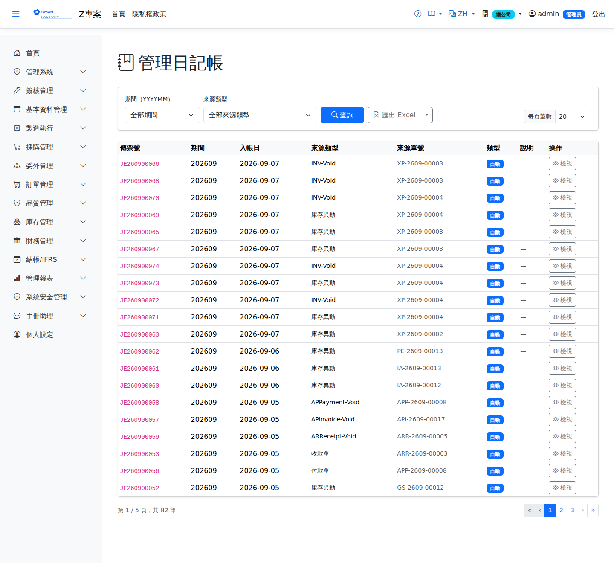

管理日記帳Management Journal
彙集各模組自動產生的分錄（進銷存過帳、人工/製費吸收、費用分攤等），並支援手開與調整分錄。Closing 期間僅允許 Adjustment 類型入帳。Gathers the entries created automatically by every module (inventory postings, labour and overhead absorption, cost allocation and so on) and also supports manual and adjusting entries. Only the Adjustment type can be posted in a Closing period.

查詢Search
作業流程Process
手動傳票Manual journal entry
更正手動傳票：沖銷Correcting a manual journal: reversal
傳票一經儲存即為正式帳，不能修改也不能刪除；開錯了請用沖銷更正：A saved journal is part of the books and can be neither edited nor deleted; to correct a mistake, reverse it:
只有手動傳票能沖銷；每張只能沖一次，沖銷傳票本身不能再沖。需具本畫面的新增權限。自動分錄的更正請回到來源單據作廢或重做。Only manual journals can be reversed; each can be reversed once and a reversal cannot itself be reversed. Requires create permission on this screen. To correct an automatic entry, void or redo the source document.
期初餘額（年中上線）Opening balances (going live mid-year)
期初餘額就是一張多行的手動傳票：借方列出全部資產科目餘額，貸方列出負債與權益。Opening balances are simply a manual journal with many lines: the assets on the debit side, the liabilities and equity on the credit side.幾十個科目一行一行按「新增行」並不可行，所以表單提供 Adding dozens of lines one at a time is not practical, so the form provides 「貼上多行」"Paste lines"：從 Excel 複製「科目代碼、借方、貸方、行摘要」四欄直接貼入即可。: copy the four columns — account code, debit, credit, line description — straight from Excel and paste them in.
為什麼有些科目不能手動選：應收、應付、存貨等科目由出貨、收料、發料等單據自動過帳，有各自的明細帳；手動打一筆進去，總帳就會與明細帳對不起來。這類科目刻意不開放（表單上方也有常駐說明），調整請用對應的單據；確實需要時由會計到「會計科目」開放。Why some accounts cannot be selected manually: receivables, payables, inventory and similar accounts are posted automatically by shipments, receipts, issues and other documents, each with its own subledger; a manual entry would leave the general ledger out of agreement with the subledger. They are deliberately closed (the form also says so above the lines); make adjustments through the corresponding document, or have accounting enable the account under Chart of Accounts if it is really needed.
列印Printing
清單每列的 按鈕（需有列印權限）在新分頁開啟含 QR Code 的列印單，可直接列印或另存 PDF。傳票列印逐行列出科目代碼與名稱（英文介面印英文科目名稱）、摘要、幣別與原幣金額、借貸方，並印借貸合計。The button on each row of the list (print permission required) opens a printout with a QR code in a new tab, ready to print or save as PDF. The voucher printout lists, line by line, the account code and name (English account names on the English interface), description, currency and original amount, and debit and credit, with debit and credit totals.
欄位說明Field reference
查詢條件Query criteria
| 條件Condition | 說明Guide |
|---|---|
| 期間（YYYYMM）Period (YYYYMM) | 以會計期間篩選，如 202607Filters by accounting period, e.g. 202607 |
| 來源類型Source type | 產生此分錄的來源模組／單別（如進貨、出貨、成本結轉）Source module and document type that produced the entry (goods receipt, shipment, cost transfer …) |
傳票表頭Voucher header
| 欄位Field | 說明Guide |
|---|---|
| 傳票號Journal No. | 系統採番，不可修改Numbered by the system; not editable |
| 期間Period | 依入帳日自動歸屬的會計期間Accounting period the entry falls in, derived automatically from its date |
| 入帳日Entry Date | 分錄的會計認列日，決定歸屬期間Accounting date of the entry, which decides the period it falls in |
| 來源類型Source type | 自動分錄的來源模組；手開分錄為手動類別Source module of an automatic entry; entries raised by hand are of the manual type |
| 來源單號Source doc No | 追溯回原始單據的單號，可回查來源作業Number of the original document, for looking up the operation it came from |
| 類型Type | 一般分錄 / 調整分錄（Adjustment）。Closing 期間僅允許調整分錄入帳Normal entry or adjusting entry. Only adjusting entries can be posted in a Closing period |
| 說明Guide | 傳票摘要Voucher description |
借貸明細Debit / Credit Lines
| 欄位Field | 說明Guide |
|---|---|
| 科目代碼 / 科目名稱Account code / Account name | 會計科目；自動分錄由各模組的科目對應規則決定The account; for automatic entries it comes from each module's account mapping rules |
| 借方 / 貸方Debit / Credit | 該行的借貸金額，全單借貸合計必須相等才能儲存The debit or credit on the line; the document can only be saved when total debits equal total credits |
| 本位幣Local Amount | 以交易匯率換算後的本位幣金額，供帳務彙總使用The amount converted to local currency at the transaction rate, used in the accounting summary |
| 成本中心Cost Center | 費用歸屬的部門，供部門實際費用與分攤使用。手動傳票只能選目前所在廠的組織單位（含未設廠別、從上層繼承到本廠的部門）；全公司層與他廠的部門不在清單中Department the cost belongs to, used for departmental actual costs and allocation. A manual journal can only use organization units of the plant you are in (including departments that inherit the plant from a parent unit); company-level units and other plants' departments are not offered |
| 說明Guide | 該明細行的個別摘要Description of the individual line |